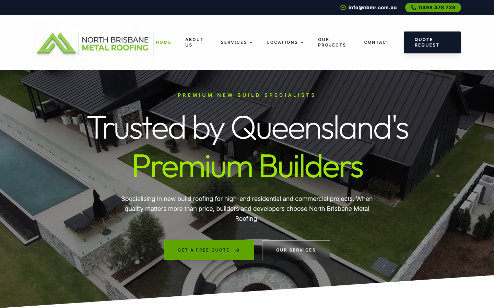

56/100 · strong_redesign · 行业：roofer · 地区：Brisbane · Google 评价：4.8★ （0 条）
投入分级： C 批量轻触 — 模板邮件 + 报告
PDF 链接，无主动跟进
触发依据： - C · strong_redesign · audit 56 · 0 评论 4.8★ (未达 B 标准)
下一步行动： 标准模板邮件 + master.md PDF 链接，无主动跟进。等客户回复触发后再投入。
线索来源 · 联系开场可用: - 来源:
Google Maps (gosom 抓取) - 搜索关键词:
roofer in brisbane - 首次发现: 2026-05-14
- Batch:
pipe-roofing-brisbane-202605142244
审计结论： audit_score=56 → strong_redesign · weakest: gbp 20, seo 20 · fired: no_https · 1 critical issues
已触发的 hard triggers： no_https
independent_http_site
慢速 4G 加载实景视频（1.6 Mbps · 150ms 延迟 · 4× CPU 节流，模拟真实手机访客的体验）：
The site looks visually polished and premium, but the first screen underuses phone contact, proof, and service clarity for a Brisbane roofing customer ready to act.
新鲜度 7/10 · 信任度 6/10 ·
转化准备度 6/10 · 设计年代 modern
值得保留的优点： - The hero photography immediately shows premium metal roofing work and supports the business category. - The green accent colour is consistent with the logo and makes the main quote button stand out. - The desktop header includes both email and phone contact, which should be preserved.
技术事实
http only
普通话翻译
你的网站没有 HTTPS — 浏览器会在地址栏显示「不安全」标记，部分浏览器（Chrome / Firefox）甚至会弹出全屏警告挡住页面。
对客户的影响
Google 早在 2018 年起把 HTTPS 列为搜索排名因素，没有 HTTPS 直接拉低自然搜索可见度；且超过 80% 的访客看到「不安全」标识会立刻关掉。对你这种 0 条 Google 评价积累起来的口碑来说，访客在网址栏就被劝退，等于浪费了所有 GBP 流量。
技术事实
On the mobile screenshot, the header shows a green circular phone icon but no visible phone number next to it.
普通话翻译
手机版顶部只有电话图标，没有直接显示电话号码，客户要先猜这个按钮能不能打电话。
对客户的影响
本地找屋顶工的人很多是在手机上马上比较和拨号；如果电话号码不明显，客户可能直接返回 Google 选择下一个商家。即使只流失 10%-20% 的来电，也会直接减少报价机会。
正确长啥样
A mobile header with a visible tap-to-call button showing both the phone icon and ‘0498 478 739’, or a sticky bottom bar with ‘Call’ and ‘Get Quote’.
Redesign 怎么改
Replace the icon-only mobile phone button with a compact tap-to-call button that displays the phone number, and keep it visible in the header or sticky bottom action bar.
技术事实
0 reviews
普通话翻译
你的 Google 评价数量低于同行平均水平。
对客户的影响
本地搜索排名信号之一就是评价数量；不光是分数，连”有多少条”都算。短期可以做的：每个完工的客户群发一条「点评一下吧」的 SMS。
技术事实
title=‘## Premium New Build Specialists’ contains-name=false contains-niche=false
普通话翻译
你网站的浏览器标签 title 没把业务名字 + 服务关键词写清楚（比如该写「North Brisbane Metal Roofing Pty Ltd - roofer Brisbane」，但目前是泛泛一句）。
对客户的影响
Google 搜索结果里展示的就是这个 title。写不清楚 = 排名靠后 + 即使排上来客户也不知道是不是匹配的服务。SEO 最便宜的修复，但很多本地企业完全没做。
技术事实
2tags
普通话翻译
页面要么没有 H1 标题（搜索引擎无法理解页面主旨），要么有多个 H1（搜索引擎不知道哪个是主题）。
对客户的影响
H1 是搜索引擎判断页面主题最权威的信号。写错或缺失 = 关键词排名拉低；同一页面同样的内容，H1 写对的可以排到前 3 页，写不对的可能挂在第 7 页。
技术事实
no LocalBusiness JSON-LD
普通话翻译
网站没有 LocalBusiness JSON-LD 结构化数据（让 Google / AI 知道你是本地企业、地址、电话、营业时间的标准格式）。
对客户的影响
Google「附近的服务」「Knowledge Panel」「AI Overview」都依赖这类结构化数据。没有 = 即使排名上去也不会出现在右侧 Knowledge Panel 或地图卡片里 — 错失高转化的展示位。AI agent / ChatGPT 引用本地商家时也是基于这些数据。
技术事实
The desktop and mobile hero areas show the headline, service sentence, and quote button, but no visible reviews, licence details, insurance mention, years in business, or completed-project count.
普通话翻译
首屏看起来漂亮，但没有马上告诉客户“我们有资质、靠谱、别人用过并认可”。
对客户的影响
屋顶工程金额高，客户通常会在几秒内判断是否可信。缺少评价、牌照和本地证明，会让一部分客户不敢提交报价，尤其是从 Google 商家资料点进来的陌生客户。
正确长啥样
The first screen includes 3-4 compact proof points such as ‘QBCC licensed’, ‘North Brisbane based’, ‘Metal roofing specialists’, and a visible Google rating or review count.
Redesign 怎么改
Add a proof strip directly under the hero headline or above the quote button with licence, insurance, local area, and review/rating signals.
技术事实
The main hero headline says ‘Trusted by Queensland’s Premium Builders’ and the smaller line says the business specialises in new build roofing for builders and developers.
普通话翻译
现在的主标题更像是在对建筑商说话，不像是在对普通需要屋顶服务的本地客户说话。
对客户的影响
如果 Google 进来的客户以为“这家公司不接我这种活”，他们不会继续研究。服务范围不清楚会让原本有需求的人提前离开，减少询盘。
正确长啥样
A headline that clearly covers the main buying intent, such as ‘Metal Roofing Specialists in North Brisbane’ with service chips for new roofs, replacements, repairs, and commercial work.
Redesign 怎么改
Rewrite the hero to lead with local roofing service clarity, then support it with the premium builder positioning as a trust proof lower on the page.
技术事实
On the mobile screenshot, the green ‘GET A FREE QUOTE’ button is visible, but the secondary outlined button below it is partially hidden by the diagonal white section at the bottom of the screenshot.
普通话翻译
手机版底部有一个按钮被斜线区域切掉了，看起来像页面没有排好。
对客户的影响
移动端细节出错会降低信任感。客户会把这种视觉问题联想到施工是否也不够细致，特别是屋顶这种高价服务，几秒内的不信任就可能损失一次报价。
正确长啥样
On mobile, the primary quote button sits fully visible with comfortable spacing, and secondary actions either stack clearly below it or move lower on the page.
Redesign 怎么改
Adjust the mobile hero height and diagonal divider so all hero buttons are fully visible, or remove the secondary button from the mobile hero and keep one clear quote action.
我们前面那段「慢速 4G 加载视频」是我们这边的实验室结果。这一段是 Google 自己对你网站打的分，包括过去 28 天 真实访客的网络体验数据（CRUX field data）。
Lighthouse 分数（实验室）：
| 维度 | 分数 |
|---|---|
| 性能 (Performance) | 36/100 |
| 可访问性 (Accessibility) | 84/100 |
| 最佳实践 (Best Practices) | 58/100 |
| SEO | 63/100 |
Lab 关键指标： LCP 14.5s · FCP
4.7s · CLS 0.000 · TBT 923ms
Google 建议的优化项（按节省时间排序，前 3）：
PSI 给的是宏观分数，下面是具体可改的两块：图片格式与 tracker 脚本。
总评： 基本未优化 — redesign 可显著降低图片下载量
具体问题： - [major] 12 张图几乎全是 JPG/PNG，未用 WebP/AVIF — 估算可节省 30-50% 图片下载量 - [minor] 12/12 张图无响应式 srcset — 移动端浪费带宽 - [minor] 12/12 张图未 lazy load — 首屏外的图阻塞主线程 - [minor] 12/12 张图无显式 width/height — 加重 CLS 布局抖动
客户最常担心的问题：「我重做网站，会不会丢掉 Google 排名？」这一段直接回答。
客户能不能 方便地 把信息留下来 =
直接的转化路径。这一段审视所有 <form> 元素的可用性 +
防 spam 配置。
未检测到任何 anti-spam 措施（reCAPTCHA / hCaptcha / Turnstile / honeypot 都没有）— 表单极容易被自动机器人灌爆，垃圾询盘会让客户对真实询盘麻木。redesign 时建议加 Cloudflare Turnstile（不可见，免费）。
Audit 总结：
none）partial (只有 2/3 —
建议补全)这是后续 「Social Media Management 月度包」 或 「Cold Outreach 启动包」 的前置条件 —— 邮件 DNS 没修好，发出去的邮件全进垃圾箱。redesign 时一并处理。
从网站源码识别出来的工具，能帮我们判断这位客户的数字成熟度。
数字成熟度打分： 0 / 6 （低 — 客户对网站的认知是「有就行」，需要先讲清楚一份能赚钱的网站长什么样）
本地服务的客户在掏钱之前会查这些凭证。缺失 = 客户跳到下一家。
信任分： 55/100
GEO = Generative Engine Optimization。ChatGPT、Perplexity、Google AI Overviews 这些 AI 搜索产品不像传统搜索引擎那样按”关键词排名”工作，它们直接抓取结构化数据并把答案合成给用户。如果你的网站在 AI 抓取这一块做得不到位，等于在生成式搜索时代隐身。
AI 可发现性总分： 30 / 100 — AI agent / ChatGPT 几乎无法准确引用此网站 — 在生成式搜索时代等于隐身
llms_txt_present — llms.txt found (5133
bytes)semantic_landmarks — 4 semantic landmarks
present: <main, <header, <footer, <sectioneeat_business_credentials — 3/4 credentials in
copy: license/QBCC, years-in-business, insuranceeeat_warranty_trust — warranty/guarantee
mentionedai_bot_robots_policy (5 分) — robots.txt has no
explicit policy for AI crawlers (GPTBot/ClaudeBot/etc)localbusiness_schema (15 分) — no LocalBusiness
or Organization JSON-LDservice_schema (10 分) — no Service JSON-LDfaqpage_schema (10 分) — no FAQPage JSON-LD
(loses AI Overview / featured snippet eligibility)aggregaterating_schema (5 分) — no
AggregateRating JSON-LD (★ rating not shown in search snippets)breadcrumb_schema (5 分) — no BreadcrumbList
JSON-LDfaq_qa_pattern (10 分) — 0 question-style
heading(s) found (Q&A format helps AI extraction)jsonld_at_least_one (10 分) — 0 JSON-LD block(s)
detected on page销售切入： 「ChatGPT 现在每月 30 亿次搜索，本地服务用户问『Brisbane 哪家屋顶公司靠谱』，AI 回答时只引用结构化数据完整的网站。你目前在这个新阵地的得分是 30/100。」
redesign 是一次性收入。以下是基于这个客户当前现状自动识别的持续性服务包机会，可以在 redesign 提案签字时一并捆绑进去。
触发依据： 网站没有 blog 板块 — 没有内容营销基础设施，长尾 SEO 流量为零。
包内容： 每月 2 篇 SEO-optimized blog（800-1,200 字）+ 每季度 1 篇 case study（含 before/after 图）+ 关键词研究报告。
月度费用区间： $400-800/月
销售切入： 「ChatGPT 时代搜索引擎更偏爱有「专家深度内容」的网站。你目前的网站只有服务介绍页 — AI 可引用的素材几乎为零。」
-2026-05-11-v1codex_cliGoogle Places · most_relevant (max 5)